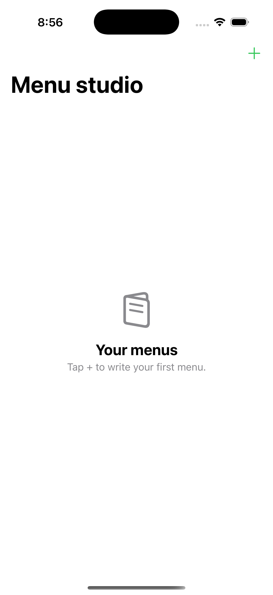

Availability and plans
In development for iPhone and iPad. The planned free version includes ads. Menu Creator Plus is a one-time purchase to remove them.
Write a menu for your next service, choose a style and share a printable A4 PDF. Keep separate drafts for lunch, dinner or a special occasion.
Open a sample to see the full A4 layout or print a copy.

Give the menu a title, then write or paste dishes and prices. Put section names in capitals to turn them into headings.
Use the Style picker to switch between Classic, Modern and Garden.
Tap this button to check the A4 layout, then use Share to send the PDF to your printer or team.
In development for iPhone and iPad. The planned free version includes ads. Menu Creator Plus is a one-time purchase to remove them.
For support, complaints, privacy requests or business enquiries, email hello@parslia.app and include Menu Creator Studio in the subject.